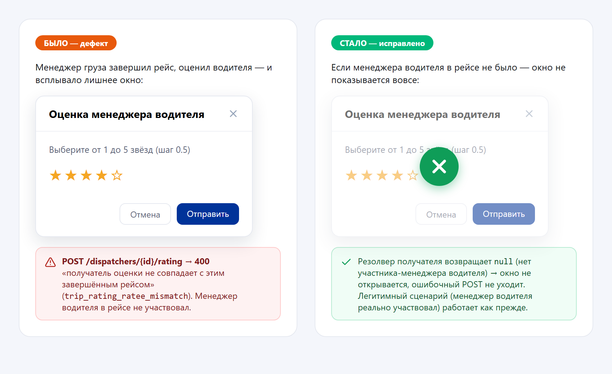
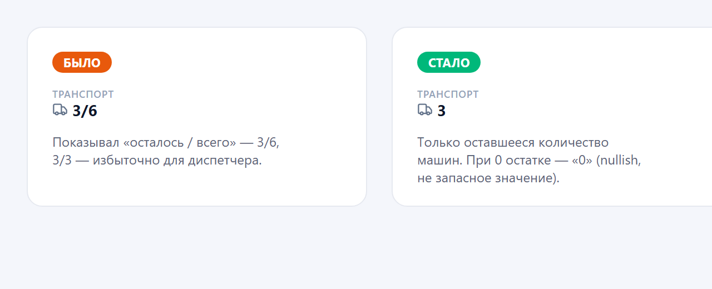
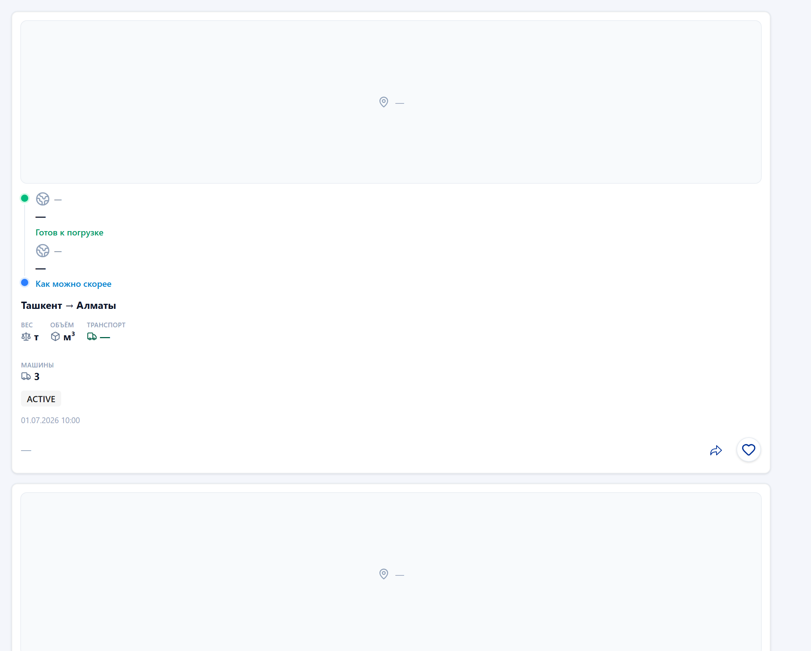
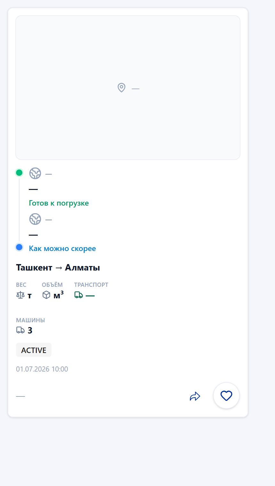

01.07.2026 — работа по Sarbon Frontend, фокус на диспетчерском приложении. Закрыто 2 дефекта: (1) SARB-DISP-No — после завершённого рейса менеджеру груза ошибочно показывалось окно «Оценка менеджера водителя», хотя менеджер водителя в рейсе не участвовал; отправка оценки падала с 400 · trip_rating_ratee_mismatch. (2) Показатель «машины» в списке «Все грузы» выводил пару «осталось/всего» (3/6, 3/3) — по требованию оставлено только оставшееся количество (3). Воротные проверки зелёные: tsc -b — чисто, eslint --max-warnings 0 — 0 предупреждений, pnpm build — exit 0, vitest — 572/572.
negotiation_dispatcher_id — это ретранслирующий третий диспетчер, а не участник рейса. Когда владелец груза назначает водителя напрямую (без менеджера водителя), резолвер всё равно возвращал чей-то id → всплывало лишнее окно оценки и бэкенд отклонял отправку. Теперь резолвер для обеих ролей самодостаточен: возвращает только настоящего участника рейса или null (окно не показывается вовсе).
| Дефект | Причина | Исправление | Файлы |
|---|---|---|---|
| SARB-DISP-No: лишнее окно «Оценка менеджера водителя» + 400 ratee_mismatch logic bug | Резолвер getCounterpartyDispatcherIdForRating для роли CARGO_MANAGER в качестве запасного варианта брал negotiation_dispatcher_id (ретранслятор, не участник) и далее «любого другого диспетчера». Плюс авто-подсказка на TripsPage открывала окно без проверки, что менеджер водителя вообще участвовал. |
Ветки CARGO_MANAGER/DRIVER_MANAGER сделаны самодостаточными: только явные сигналы менеджера + null, без «сквозного» generic-блока. На TripsPage добавлен guard cargoManagerHasDriverManagerToRate (требует не-свой trip.driver_manager_id). |
src/utils/offerCounterpartyDispatcher.ts, src/pages/trips/TripsPage.tsx, + offerCounterpartyDispatcher.test.ts |
| «Все грузы»: показатель «машины» выводил n/n вместо остатка ui bug | Оба рендерера списка жёстко выводили {vehicles_left ?? '?'}/{vehicles_amount ?? '?'} — «3/6», «3/3». Избыточно: диспетчеру важно только сколько машин ещё нужно. |
Выводится vehicles_left ?? vehicles_amount ?? '?' (только остаток). Оператор ?? сохраняет настоящий 0. Полное «всего» осталось отдельным полем в детальном окне груза. |
CargoRouteRow.tsx, allCargosTableColumns.tsx |
// src/pages/cargos/all-cargos/components/CargoRouteRow.tsx (и allCargosTableColumns.tsx) - {cargo.vehicles_left ?? '?'}/{cargo.vehicles_amount ?? '?'} // → «3/6», «3/3» + {cargo.vehicles_left ?? cargo.vehicles_amount ?? '?'} // → «3» (0 остаётся «0»)
Записи внесены 01.07.2026 в bug.md (корень репозитория).
Диспетчерские экраны защищены авторизацией (ProtectedRoute), поэтому скриншоты списка «Все грузы» сделаны рендером реального компонента CargoRouteRow в headless Chrome с настоящей i18n (ru) и Tailwind. Иллюстрация SARB-DISP-No отражает поведение окна оценки до и после фикса.




| Артефакт | Путь |
|---|---|
| Журнал исправлений (2 записи 01.07) | bug.md (записи 01.07.2026 · 17:08 и 17:30) |
| Краткая сводка для PM (Excel) | daily-report/01.07.26/report-01.07.26.xlsx |
| Резолвер получателя оценки | src/utils/offerCounterpartyDispatcher.ts |
| Потоки оценки (авто-подсказка + guard) | src/pages/trips/TripsPage.tsx |
| Unit-тесты резолвера (9 кейсов) | src/__tests__/offerCounterpartyDispatcher.test.ts |
| Показатель «машины» (2 рендерера) | src/pages/cargos/all-cargos/components/CargoRouteRow.tsx · utils/allCargosTableColumns.tsx |
| Скриншоты | daily-report/01.07.26/img/ |
| Отчёт предыдущего дня | daily-report/30.06.26/index.html |
При сверке git-диффа дня с отчётом обнаружены изменённые области, которые не были задокументированы. Добавлены ниже (текстовая доработка отчёта, без скриншотов).
Полный дифф дня — 99 файлов (в первой версии отчёта указывалось «5»).
| Область | Значимость | Файлы / коммит |
|---|---|---|
| Admin: Excel-фильтр (AdminFilterDropdown + adminFilters.ts) раскатан почти на все списки админки | КРУПНОЕ | AdminFilterDropdown.tsx (+151), adminFilters.ts (+105) + тест (+130), применён к Cargo/Dispatchers/Drivers/Offers/Trips/Admins/Users/ModerationLog/CommandCenter/Communications/Metrics — коммит 0661ee4d |
| Admin: рефактор feature-first + перенос Summary-view в per-page components/ + чистка мёртвого кода | КРУПНОЕ | ARCHITECTURE.md (+106), docs/adr/0001 (+36), перенос 8 *SummaryView, удаления CargoCard/CargosFilter/DriverEditDrawer/… , новый adminAccess.ts — коммит 0661ee4d/dfb9100a |
| Нормализация истории рейсов (tripsHistoryNormalize.ts + рендер) | мелкое | tripsHistoryNormalize.ts (+60) + 2 теста, TripsHistoryCardsList/useTripsPresentation/useTripsTableConfig |
| Обновление локалей (15 языков) + SEO route-meta | мелкое | public/locales/*.json (+11 каждый), seo.ts, RouteSeoHead.tsx |